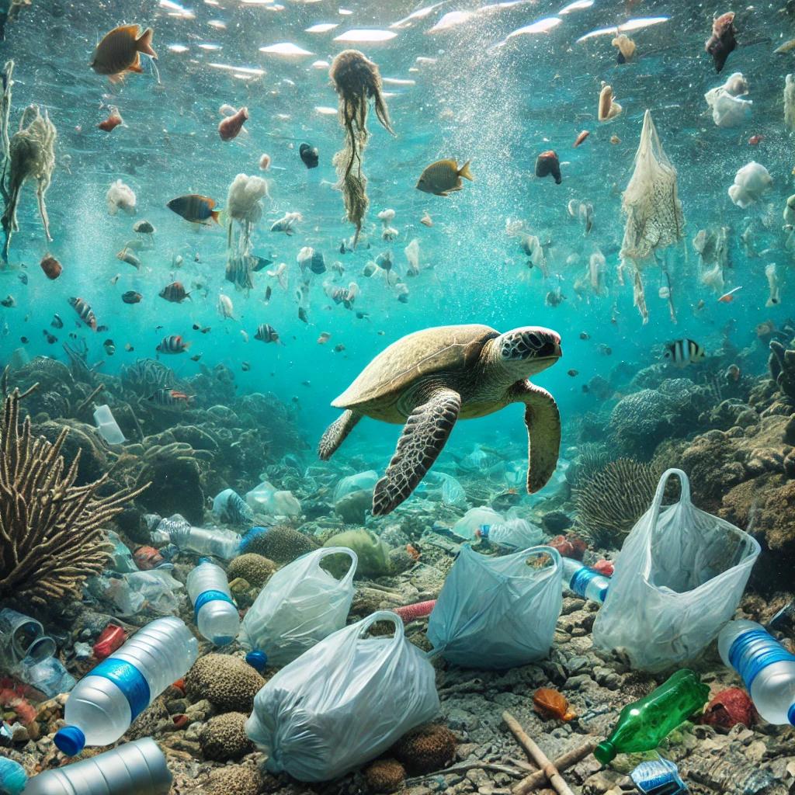

Mengenal Keanekaragaman Hayati Laut

Laut adalah tempat tinggal bagi berbagai jenis organisme yang berbeda, mulai dari mikroskopis plankton hingga raksasa laut seperti hiu dan paus. Terumbu karang, yang sering disebut "hutan hujan bawah laut," adalah pusat keanekaragaman hayati di mana ribuan spesies ikan, invertebrata, dan tanaman laut hidup berdampingan. Tidak hanya indah, tetapi mereka juga memainkan peran penting dalam menjaga keseimbangan ekosistem laut. Tumbuhan laut seperti rumput laut dan fitoplankton berperan sebagai produsen oksigen yang menopang kehidupan di bumi.
Laut Sebagai Sumber Kehidupan

Laut memberikan kita banyak manfaat. Ikan dan makanan laut adalah sumber protein utama bagi miliaran orang di seluruh dunia. Selain itu, banyak obat-obatan yang berasal dari makhluk laut yang unik, seperti spons laut dan mikroorganisme laut lainnya. Laut juga mendukung kegiatan ekonomi global melalui perikanan, pariwisata, dan perdagangan internasional. Namun, untuk menjaga keberlanjutan sumber daya ini, kita harus memahami dan melindungi ekosistemnya.
Ancaman terhadap Keanekaragaman Hayati Laut

Sayangnya, laut dan keanekaragaman hayatinya berada dalam ancaman. Perubahan iklim, polusi plastik, penangkapan ikan berlebihan, dan perusakan habitat mengancam kelestarian ekosistem laut. Suhu air laut yang semakin hangat menyebabkan pemutihan terumbu karang, sementara plastik yang mencemari lautan merusak habitat dan mengancam kehidupan makhluk laut. Jika tidak ada tindakan nyata, banyak spesies laut yang terancam punah dalam beberapa dekade mendatang.